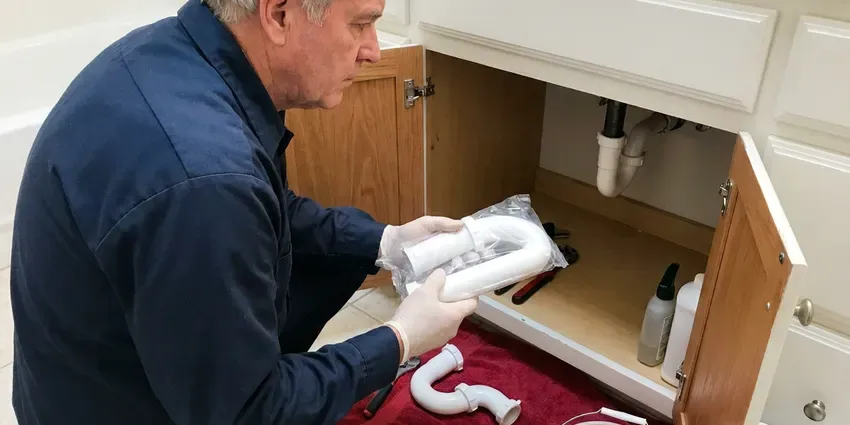

Faucet Replacement in Norwich, CT
GLV Plumbing provides fast and efficient faucet replacement for homes and businesses across Norwich, CT.
- Same-Day Faucet Replacement
- Quality Fixtures
- New Shutoffs and Supplies
- Quality Workmanship

Ready for a New Faucet in Your Home in Norwich, CT?
Get your leaky or broken faucet replaced quickly and professionally by our local team.
Professional Faucet Replacement Services in Norwich, CT
GLV Plumbing specializes in all types of faucet replacement, from dripping kitchen sinks to corroded bathroom fixtures. Homeowners on well water near Norwich should test regularly, since acidic water can cause blue-green stains and pinhole leaks in copper. We know how mineral deposits can wear down faucet components over time.
Our expertise includes:
- Kitchen and Bathroom Faucet Replacement
- Upgrade to water-saving and modern fixtures.
- Repair of Corroded Faucets and Pipes

Additional Bathroom Plumbing Services in Norwich, CT
From toilets to showers, our bathroom plumbing team in Norwich, CT repairs, installs, and replaces every fixture with clean, code-compliant work.


Customers
Why Choose GLV Plumbing for Faucet Replacement in Norwich, CT?
Our team makes sure your new faucet is installed correctly and efficiently, minimizing disruption to your home. We pride ourselves on clear communication and lasting results.
- Full Upgrade, New shutoffs and supply lines come standard when needed.
- Local Expertise, Our plumbers are familiar with Norwich water supply characteristics and common fixture issues, providing tailored solutions.
- Code Compliant, All faucet replacements adhere strictly to Connecticut plumbing regulations for your safety.
Citywide Coverage
Our plumbers serve all of Norwich and carry popular faucet models on the truck. That means fewer delays and faster replacements.
Experienced Team
Our plumbing team has extensive experience with faucet replacement in Connecticut homes, dealing with everything from mineral scale to settling that affects plumbing. We train our technicians on the latest installation techniques for all faucet types.
Safety-First Approach
We shut off water and protect your cabinets and countertops before removing the old faucet. Any water damage under the sink is pointed out so you can deal with it.
Trusted Certified Norwich Plumbing Services Professionals
At GLV Plumbing, we take pride in providing licensed, certified plumbing services throughout Norwich, CT. Backed by leading industry credentials, our experienced plumbers combine technical skill with genuine customer care. Whether it is repair, installation, or maintenance, we follow strict safety and quality standards to deliver long-lasting results you can trust.
Call Us Now PHCC Plumbing Contractor Recognition
PHCC Plumbing Contractor Recognition Better Business Bureau (BBB) Accreditation
Better Business Bureau (BBB) Accreditation Angi Certified Pro
Angi Certified Pro ISO 9001 Quality Management Certification
ISO 9001 Quality Management CertificationReliable Faucet Replacement Services in Norwich, CT
Corrosion-Resistant Faucet Options in Norwich, CT
Homeowners on well water near Norwich should test periodically, since acidic water can cause blue-green stains and pinhole leaks in copper. Depending on water quality, some faucets can corrode faster than others. GLV Plumbing can recommend and install faucets made with corrosion-resistant materials like stainless steel or durable finishes that stand up better to mineral content in the water. This means your new faucet in Norwich, CT lasts longer and keeps its appearance and function.

Outdoor and Utility Faucet Replacement in Norwich
Outdoor spigots and utility sink faucets are essential but often overlooked until they fail. When a deep cold snap is forecast, keeping the heat steady and opening cabinets on outside walls helps prevent a burst pipe. Heat, cold and mineral-heavy water can lead to cracks or persistent leaks. We provide sturdy replacements for hose bibs, laundry room faucets, and utility sink fixtures. Our installations focus on weather resistance and durability, preventing expensive water waste and potential foundation damage from constant dripping near your home.
Outdoor Faucet Replacement in Norwich, CT
Outdoor hose bibs can crack from sun exposure or from freezing winter nights. When a deep cold snap is forecast, keeping the heat steady and opening cabinets on outside walls helps prevent a burst pipe. We replace worn spigots with frost-free hose bibs and add vacuum breakers for backflow protection. New hose bibs stop leaks at the handle and spout. We also check for leaks inside the wall behind the bib.
Commercial Faucet Replacement in Norwich
Businesses in Norwich rely on working plumbing, and a broken commercial faucet can interrupt operations. We provide specialized faucet replacement services for commercial kitchens, restrooms, and utility areas. Our plumbers are equipped to handle heavy-duty, ADA-compliant, and specialized commercial fixtures, keeping downtime to a minimum for your business. We focus on durable, high-traffic solutions that meet commercial code requirements.
Utility Sink Faucet Replacement in Norwich
Utility sink faucets in laundry rooms or garages often handle tougher tasks and can wear out fast. We provide sturdy utility sink faucet replacement in Norwich, focusing on durable fixtures designed for heavy use. Our team can install wall-mount or deck-mount options, providing strong water flow and leak-free operation, which is crucial for preventing water damage in high-traffic utility areas.
Touchless Faucet Upgrade in Norwich
Replacing a standard faucet with a touchless model adds convenience and hygiene, especially in busy kitchens. We install the faucet, mount the control box and connect battery or plug-in power. Sensor range and flow are tested and adjusted. This is one of the most requested kitchen upgrades we install.
Moen Faucet Replacement in Norwich
Moen faucets are a common choice for many homeowners due to their style and warranty. If your Moen faucet is leaking, corroded, or simply outdated, GLV Plumbing offers professional replacement services. We understand the various valve types and cartridges used in Moen products, making the replacement process smooth and quick. We will ensure your new Moen faucet works the way it should and provides years of trouble-free use.

Bathroom Faucet Replacement in Norwich, CT
Upgrading your bathroom faucets can significantly improve the look and feel of your space while resolving leaks or low pressure. We replace widespread, centerset, single-hole, and wall-mount bathroom faucets. Our team handles everything from removing old, corroded fixtures to installing new, efficient models. We pay close attention to drain assemblies and supply lines, which are often prone to wear in older homes, ensuring a complete and lasting solution.
Faucet Replacement Near Me in Norwich, CT
When you search for faucet replacement near me in Norwich, CT, GLV Plumbing is your reliable local choice. We prioritize fast response times and efficient service to address your plumbing needs quickly, minimizing inconvenience.
Our plumbers are local to Norwich and know the fixtures common in area homes. We work cleanly, explain your options and give a flat price up front. Every replacement is backed by our workmanship guarantee.
GLV Plumbing at a Glance
- Fully licensed plumbing team covering Norwich, CT
- Same-day appointments and 24/7 emergency response
- Upfront, flat-rate pricing before work begins
- 4.8-star rated by 946+ Connecticut customers
Norwich Map
Norwich Information
- Population
- 39,881
- Area codes
- 860/475/959
- Service area
- Norwich and communities within 40 miles
- Nearby
- Middletown, East Hartford, Hartford, Meriden
Homeowners on well water near Norwich should test periodically, since acidic water can cause blue-green stains and pinhole leaks in copper. Faucet replacement in Norwich, CT with ceramic cartridge models restores smooth, leak-free flow.
Expert Services
Trust our professionals for reliable GLV Plumbing solutions in Norwich, CT.
Our Specialized Plumbing Services in Norwich, CT
At GLV Plumbing, we provide a complete range of plumbing services across Norwich, CT. From leak detection to full system installations, our team ensures fast, precise, and affordable service for both residential and commercial properties. Explore our core services below:


How Our Faucet Replacement Process Works in Norwich, CT
GLV Plumbing follows a clear, organized process for every faucet replacement, ensuring quality results.
Request a Quote
Contact us at (860) 487-7330 to describe your faucet issue and schedule an appointment. We will gather initial details about your current faucet and your replacement needs.
On-Site Assessment
Our plumber will visit your Norwich home to inspect your existing faucet, plumbing, and the installation area. We will discuss your options for new fixtures.
Professional Installation
Once you choose your new faucet, our experienced plumber will carefully remove the old unit and install the new one. We ensure all connections are sealed, and the faucet is tested for proper operation and leaks.
Frequently Asked Questions About Faucet Replacement in Norwich
Faucet replacement labor usually runs $150 to $350. Including a quality mid-range faucet, most jobs total $300 to $750. Touchless or high-end faucets can bring the total to $800 or more.
In many cases, yes. We carry popular faucet models on our trucks, and we can install a faucet you have already purchased.
Replace a faucet if it leaks after repairs, the body is corroded or cracked, parts are discontinued or it simply no longer fits your kitchen or bath.
GLV Plumbing stands behind our work with a comprehensive warranty on all faucet replacement services. The specific terms of the warranty will be explained before work begins, giving you peace of mind regarding our craftsmanship.
To extend your faucet's life, regularly clean it with non-abrasive cleaners, avoid over-tightening handles, and address minor drips promptly. Homeowners on well water near Norwich should test periodically, since acidic water can cause blue-green stains and pinhole leaks in copper. If your water is hard, consider a whole-home water softener to reduce mineral buildup.
If your shutoff valves are old, stiff or corroded, yes. Replacing them during a faucet swap is inexpensive and prevents future leaks.
We service and install all major faucet brands, including Delta, Moen, Kohler, American Standard, Pfister, and many others. Our plumbers are familiar with the specific installation requirements and common issues for a wide variety of manufacturers.
Homeowners on well water near Norwich should test periodically, since acidic water can cause blue-green stains and pinhole leaks in copper. Hard water can lead to mineral deposits, or limescale, building up inside faucets. This buildup can reduce water flow, cause drips, and corrode internal components over time. Regular maintenance or choosing faucets designed for hard water can help extend their lifespan.
What People Are Saying About Our Plumbing Experts?

Laura S.
I scheduled a water heater replacement, and the team made the process smooth and affordable. The new unit works perfectly, and they cleaned up after completing the job.
Water Heater Replacement · Norwich, CT
Patricia H.
We had a slab leak that two other companies could not find. GLV Plumbing located it in under an hour, explained our options, and the price matched the quote to the dollar.
Slab Leak Repair · Norwich, CT
Robert G.
The trenchless sewer replacement saved our front yard. They walked us through the camera inspection footage first so we knew exactly what we were paying for.
Sewer Line Replacement · Middletown, CT
Daniel K.
A pipe burst at 11 pm and they actually answered. The plumber showed up within the hour, shut everything down, and had us back to normal the next morning. Could not ask for more.
Emergency Plumbing · New Britain, CTSofia M.
Two new toilets installed in one visit, no mess left behind, and the tech even adjusted a faucet he noticed was dripping. Fair pricing and really friendly.
Toilet Installation · Norwich, CT
Mark T.
When our office needed drain cleaning, GLV Plumbing provided quick, reliable service. The plumber arrived on time and made sure every drain flowed perfectly before leaving. Very satisfied.
Drain Cleaning · West Hartford, CT